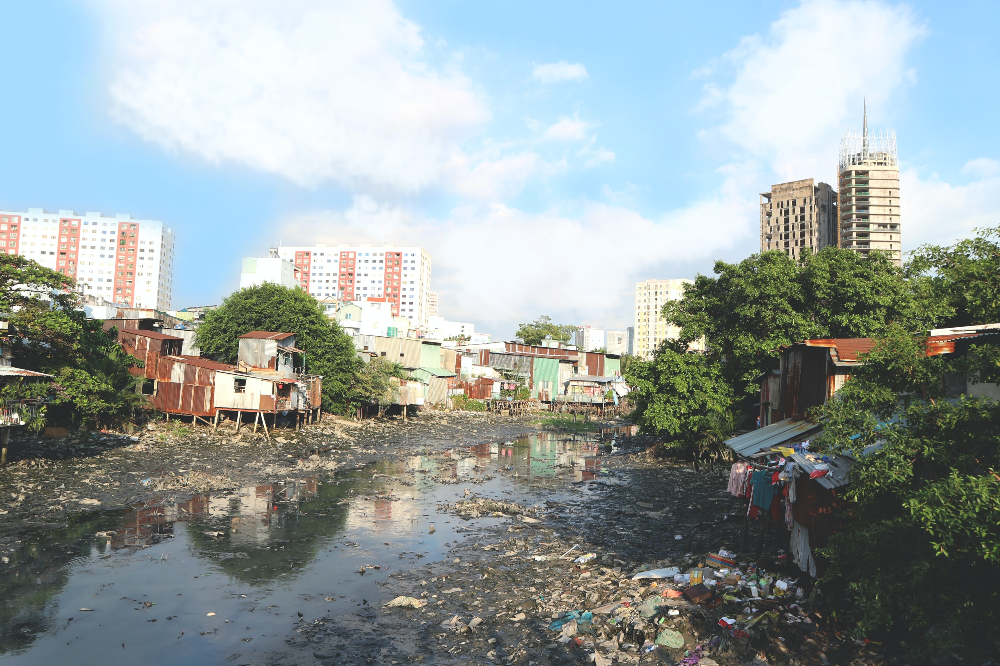
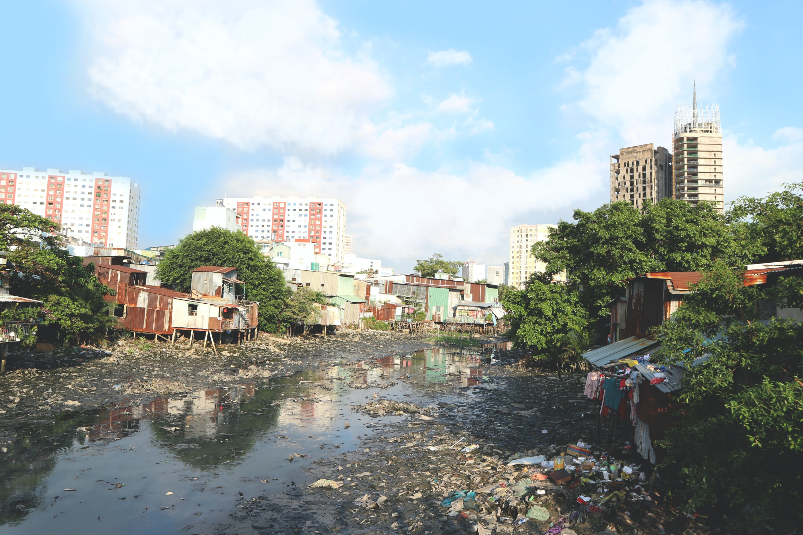

Marine Pollution
 

Cause & Effect
When sediment runoff increases, sedimentation on coastal reefs eventually increases. As a result, the clarity of ocean waters decreases and leads to decline of sunlight that penetrate water. This hugely affects the growth of light-dependent plants and animals such as coral reefs.
Dumping garbage, chemical substances, sewage into oceans cause serious threat to marine animals and plants. Some of them contain hazard materials such as mercury, cryolite and even radioactive substances that could alter their DNA.
Causes a variety of healthy problems such as reproductive failure and organ damage.
Oil spills are harmful to marine lifes as it disrupts the insulating ability of fur-bearing mammals by adhering to their bodies. Eg. Sea otters. In addition, oil damages the airways and lungs of mammals and even leads to death by lack of breathing. Eg. pneumonia, emphysema.
Also, oil sometimes looks like floating food, so some fish and birds swim or dive through oil slicks.
Sticking oil to bird’s feathers prevents birds from insulation and waterproofing which causes hypothermia. As feathers weigh more and become sticky, birds sink or drown easily as they can not trap sufficient air between them to keep them buoyant.
Eg.The largest accidental oil spill in history- On April 20, 2010, 560 to 585 thousands tonnes of crude oil spills into the deepwater horizon in the Gulf of Mexico in the United States.
The process of retrieving mineral deposits from the area of the ocean below 200m which covers about 65% of the Earth’s surface.
Extracting minerals from the ocean floor using machines can destroy the seabed habitat degradation which may cause loss of biodiversity and ecosystem. In particular, there are many species which live in the deep ocean are endemic.
Vibration and light from the mining equipment and surface vessels cause noise and light pollution. Moreover, there is a potential risk of leaking fuel and toxic products into the ocean.